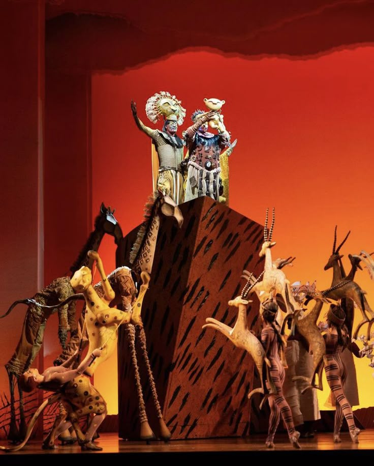

Una historia sobre la familia, la responsabilidad, la pérdida y el regreso al lugar al que pertenecemos.

The Lion King es un musical basado en la película animada de Disney de 1994. Cuenta la historia de Simba, un joven león destinado a convertirse en rey de las Tierras del Reino.
Simba es hijo de Mufasa y Sarabi. Desde pequeño, Mufasa le enseña que ser rey no consiste solamente en tener poder, sino también en proteger y respetar a todos los seres que forman parte de su reino.
Sin embargo, Scar, hermano de Mufasa, desea convertirse en rey. Para conseguirlo desarrolla un plan que cambia completamente la vida de Simba.
Después de la muerte de Mufasa, Simba abandona las Tierras del Reino creyendo que es responsable de lo ocurrido. Durante su viaje conoce a Timón y Pumba, quienes le enseñan a vivir bajo una filosofía despreocupada.
Años después, Simba descubre que todavía tiene una responsabilidad con su hogar. Decide regresar y enfrentarse a Scar para recuperar el lugar que le corresponde.
La historia gira alrededor del concepto del ciclo de la vida y de la importancia de aceptar nuestras responsabilidades.
| Personaje | Su historia | Función en la historia |
|---|---|---|
| Simba | Hijo de Mufasa que debe superar la culpa y regresar para recuperar su hogar. | Protagonista y futuro rey de las Tierras del Reino. |
| Mufasa | Rey de las Tierras del Reino y padre de Simba. | Guía de Simba y representación del liderazgo responsable. |
| Scar | Hermano de Mufasa que desea ocupar el trono. | Principal antagonista y responsable del conflicto por el poder. |
| Nala | Amiga de la infancia de Simba que permanece vinculada a su hogar. | Impulsa a Simba a regresar y luchar por las Tierras del Reino. |
| Rafiki | Sabio mandril que conoce la historia de la familia de Mufasa. | Guía espiritual que ayuda a Simba a recordar quién es. |
| Zazú | Ave que sirve al rey y permanece cerca de la familia real. | Consejero de Mufasa y personaje que aporta humor. |
| Timón | Suricata que encuentra a Simba durante su exilio. | Amigo de Simba y representante de la filosofía "Hakuna Matata". |
| Pumba | Jabalí que vive junto a Timón y conoce a Simba. | Amigo de Simba y compañero de Timón. |
| Sarabi | Leona, compañera de Mufasa y madre de Simba. | Representa a la familia real y la resistencia durante el gobierno de Scar. |
El musical utiliza la idea del ciclo de la vida para mostrar cómo las generaciones se suceden y cómo cada individuo tiene una responsabilidad dentro de su comunidad.
Ayuda a Simba a llegar hasta Pride Rock. Puedes utilizar las flechas del teclado o los botones.
Puntos: 0 Vidas: 3
Presiona "Iniciar juego" para comenzar.
| Número | Canción | Personajes |
|---|---|---|
| 1 | Circle of Life | Elenco |
| 2 | I Just Can't Wait to Be King | Simba y Nala |
| 3 | Be Prepared | Scar |
| 4 | Hakuna Matata | Simba, Timón y Pumba |
| 5 | Can You Feel the Love Tonight | Simba y Nala |
| 6 | He Lives in You | Rafiki y elenco |
| Año | Evento | Importancia |
|---|---|---|
| 1994 | Película animada | Se presenta por primera vez la historia de Simba. |
| 1997 | Estreno del musical | La historia llega al teatro musical. |
| 1998 | Premios Tony | La producción recibe reconocimientos, incluyendo Mejor Musical. |
| 2019 | Nueva película | La historia vuelve al cine en una nueva adaptación. |
Ctrl + R para reiniciar la página y el juego.
The Lion King — una historia sobre descubrir quién eres y aceptar la responsabilidad de tu lugar en el mundo.
"El ciclo de la vida"